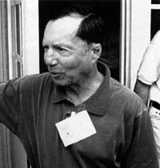

Marcel Jr, naît le à Houston (Texas, USA), fils de Jesse A. Marcel. Il a l'occasion d'examiner les débris de l'objet écrasé près de Roswell (Nouveau-Mexique) en , apportés un moment à la maison par son père.
Il devient médecin à Helena (Montana).
En , William L. Moore l'interroge. Marcel dit se souvenir qu'il avait 11
ans à l'époque, et des débris qu'il a vu :
Papa eut un appel de l'extérieur et enquêta sur un appareil écrasé ou quelque chose comme ça. Il était parti un
jour ou deux et revint avec un fourgon et une partie de voiture remplis d'épave et de débris. Le matériel était
comme de la feuille métallique, très fine, ressemblant à du métal, mais pas du métal, et très solide. Il y avait
aussi du matériel structurel - tiges, etc. Également une quantité de matériau de plastic noire qui semblait de
nature organique. Papa revint dans la soirée. Il était parti toute une nuit et la plupart du jour suivant. Il avait
une Buick 1942 et une carriole attaquée à l'arrière, et toutes les deux étaient chargée de ce matériel qui n'était
qu'une petite partie de la totalité du matériel.
Lorsque Moore lui demande s'il a pu prendre un morceau de ce matériel, le docteur Marcel répond :
Vous savez, j'aurais pu me donner des coups de pieds un millier de fois pour ne pas l'avoir fait.
Papa m'avait dit que c'était quelque chose de classifié et de ne pas en prendre, donc je ne l'ai pas fait. Mais
certainement, j'aurais voulu le faire.
Est-ce le docteur Marcel s'est souvenu avoir entendu quelque chose de plus sur l'incident après
cela ?
Dr. Marcel : Oui. L'histoire a filtré et nous avons été bombardés de journalistes, etc. Je
n'étais pas trop impliqué là-dedans. Ma principale impression fut que les objets métalliques et les bandes venaient
d'une sorte de machine et non pas d'un ballon-sonde. On me dit que c'était une sorte d'avion, mais que ce n'était un
des types dont nous étions familiers - ça, c'est certain. Papa dit que la vitesse d'impact ne collait avec aucun
type d'appareil que nous avions à l'époque.
Quelques semaines plus tard, en avril, Marcel écrit à Moore :
En référence à l'incident ovni de ou , j'ai omis une description de l'épave par
peur que cela ait pu être l'imagination fertile d'un garçon de 12 ans. Imprimé le long du côté des restes d'une tige
se trouvaient des caractères de type hiéroglyphique. J'ai récemment interrogé mon père à
ce sujet, et il s'est souvenu avoir vu ces caractères également, et les a même décrits comme étant de couleur
pourpre-rose. Des hiéroglyphes égyptiens seraient une description visuelle proche de caractères vus, sauf que je ne
pense pas qu'il y avait des figures animales présentes comme il y en a dans de véritables hiéroglyphes égyptiens. Je
me demande toujours si certains restes du crash pourraient reposer dans le sol du désert du Nouveau-Mexique. D'après
mon père, il en restait lorsque lui et son équipe ont investigué le site du crash aérien. Je suspecte, cependant,
qu'après que le véritable nature du crash a été connue du Renseignement de l'Air Force, l'ensemble du site ait disparu
dans un aspirateur. Comme vous le savez, mon père avait apporté une partie de l'épave à la maison et l'avait étendu
sur le sol de la cuisine, tentant de mettre ensemble certains des plus grands fragments. Il y avait littéralement des
piles de bouts métalliques avec des morceaux d'un résidu noir et fragile qui ressemblait à du plastique qui avait
fondu ou été brûlé. La tâche était sans espoir parce qu'il y avait bien trop de débris pour tenir sur le sol d'une
cuisine. Je doute que tous les fragments les plus petits aient été ramassés de la cuisine, et, en fait, ma mère
remarqua que certains d'entre eux furent probablement balayés vers la porte de derrière. A cette époque nous avons
coulé une dalle de béton atour de la porte de derrière pour faire un patio. Je ne me souviens pas si c'était avant ou
après l'incident, mais si c'était peu après, y aurait-il une meilleure manière de préserver certains de ces fragments
qui furent balayés ? La récupération de quelque chose serait très faible, mais pas zéro...
Autre témoignage :
Notre maison se trouvait sur la route entre le lieu du crash et la base. Mon père était tellement fasciné par ce
qu'il avait trouvé qu'à 2 h du matin, il s'est arrêté pour nous dire : Voici les morceaux d'une soucoupe volante, on
ne connaît pas leur origine. Il voulait nous montrer les débris, à ma mère et à moi-même. Je l'ai aidé à les
décharger de la voiture et nous les avons étalés sur le sol de la cuisine pour pouvoir les observer, voir à quoi ils
ressemblaient et ce que c'était. En fait, il voulait que je l'aide à regarder s'il y avait des composants
électroniques, des condensateurs, des résistances, des fils électriques ou d'autres matériaux de cette nature, mais
il n'y avait rien de ce genre. Ce n'étaient que des débris métalliques qui ressemblaient à du plastique. L'un
d'entre eux ressemblait à des feuilles d'aluminium, mais ce n'en était pas. C'était gris et pas vraiment brillant.
Il y avait du métal fin et flexible, ressemblant à du plastique noir, comme de la bakélite, de 2 à 3 mm d'épaisseur.
Et puis il y avait la poutrelle, qui faisait 30 à 40 cm de longueur et 1 cm de diamètre à sa section, avec des
écritures inscrites à l'intérieur de cette structure. L'écriture était très particulière. Au début, j'ai pensé que
c'était une écriture hiéroglyphique, mais ce n'en était pas. C'était plutôt une écriture faite de symboles
géométriques, de couleur pourpre (une sorte de violet métallique). Ces symboles étaient inscrits sur la surface
intérieure de ce que je pensais être une poutrelle provenant d'une structure.
Marcel Jr.

Après avoir regardé les débris, puis les avoir remis dans leur boîte et chargés dans la voiture, mon père est
reparti à la base. Je ne me rappelle pas l'avoir revu pendant 24 ou 48 h. C'était pendant ce laps de temps qu'il a
emporté les débris à la base de l'Air Force de Carswell, à bord d'un bombardier B-29. Là-bas, les matériaux ont été
examinés par un officier, le général Ramey. C'est là qu'a été prise la célèbre photo de mon père touchant les
débris, différents de ceux que j'avais vus dans la cuisine cette nuit-là. Il examinait des débris ressemblant à ceux
d'un ballon ou d'un réflecteur radar, mais je tiens à souligner que ce ne sont pas les mêmes débris que ceux que
nous avions vus la nuit précédente.
Lorsqu'il est revenu, mon père nous a interdit de parler de l'événement. Je ne pouvais même pas en parler à mes
amis et je ne l'ai pas fait. Nous en avons parlé seulement tous les trois, dans la famille. A l'époque, il y avait
beaucoup d'histoires de soucoupes volantes et nous repensions toujours que ce que nous avions vu provenait d'une
réelle soucoupe volante. Mais nous n'en parlions pas en détail car, même dans la famille, nous ne nous sentions pas
libres pour en parler.
Depuis cet événement, j'ai réalisé qu'il existait d'autres êtres, d'autres gens intéressés par notre civilisation,
venus d'autres systèmes solaires. J'aimerais savoir d'où ils viennent et comment ils sont venus.
En , lors d'une séance d'hypnose menée par le docteur John
Watkins, Jesse Marcel Junior se souvient avoir été réveillé par son père cette nuit et l'avoir suivi dehors pour
l'aider à transporter une grande boîte de débris. Une fois à l'intérieur, ils en vidèrent le contenu et répandirent
les débris sur le sol de la cuisine.
Marcel décrit les feuilles métalliques et les objets en forme de "I". Toujours sous hypnose, il se souvient des
inscriptions sur ces structures en "I" comme étant Pourpres. Étranges. Jamais vu quelque chose comme ça... Des
figures géométriques différentes, des feuilles et des cercles. Interrogé, il répond que les symboles étaient
petits et d'un pourpre brillant. Il y avait de nombreuses figures séparées. Toujours sous hypnose, il raconte que son
père lui a alors dit que cela venait d'une soucoupe volante. Je lui demande ce qu'est une soucoupe volante : "Je ne
sais pas ce qu'est une soucoupe volante... C'est un vaisseau. [Papa est] excité !
Par la suite Marcel est interrogé par Kent Jeffreys, qui parvient à ce que Marcel
entreprenne une régression hypnotique pour reconstruire ce qu'il a vu exactement lorsque son
père lui a montré des pièces de débris du crash de
Roswell. La régression filmée dure 6 h, menée par Neil Hibbler, hypnoticien du FBI.
Pour Jeffreys, l'expérience ne se conclut dans le sens de la thèse extraterrestre,
mais d'un ballon comme Mogul.
Marcel, lui, reste convaincu du contraire : La session était intéressante, mais elle ne m'a sûrement pas fait
changer d'avis. Mes souvenirs sont les mêmes. Il est conscient des multiples incohérences entre le matériel qu'il
a vu enfant et le matériel décrit comme provenant du ballon Mogul : Je passais juste en revue des images
d'appareillage de ballons Mogul et essayait de les faire correspondre au schéma de débris que j'avais vu.
Concernant les symboles controversés enfoncés sur une petite "tige en I", que Karl
Pflock a identifié comme provenant d'une bande adhésive utilisée dans Mogul,
Marcel déclare : Les figures qu'ils utilisaient étaient sur la bande de cellophane, qui fait près d'un pouce de
large. C'est bien plus grand que ce que j'ai vu. Sur ces symboles, Marcel indique également : J'ai regardé
certains des dessins des images ressemblant à des lettres et à des fleurs et je ne me souviens tout simplement pas
de quelque chose de proche de ça. Selon Marcel, ce qu'il a vu ne ressemblait pas à des fleurs, c'était plus
des dessins géométriques.
Dans l'explication Mogul, la "tige en I" est décrite comme une baguette de balsa. Mais Marcel déclare que ce n'est
pas ce qu'il a vu et manipulé en : C'était très léger, comme du bois de balsa, mais je me
souviens de métal, pas de bois. J'ai construit beaucoup de maquettes d'avions remplies de balsa, et je pense que je
verrai la différence. Je vais m'en tenir à ma mémoire. Je me souviens de ces tiges comme du métal et non du bois de
balsa.
Il note aussi que la feuille métallique qu'ils utilisaient sur les cibles radar était renforcée par du papier, et
la feuille que j'ai vu n'était pas renforcée par du papier.
Malgré cela Marcel considère Jeffreys comme un ami proche, et n'est pas sûr de
savoir pourquoi Jeffreys a fait un "virage à 180 °" sur Roswell.